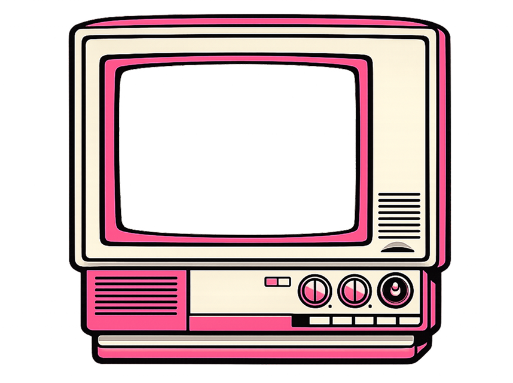
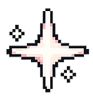
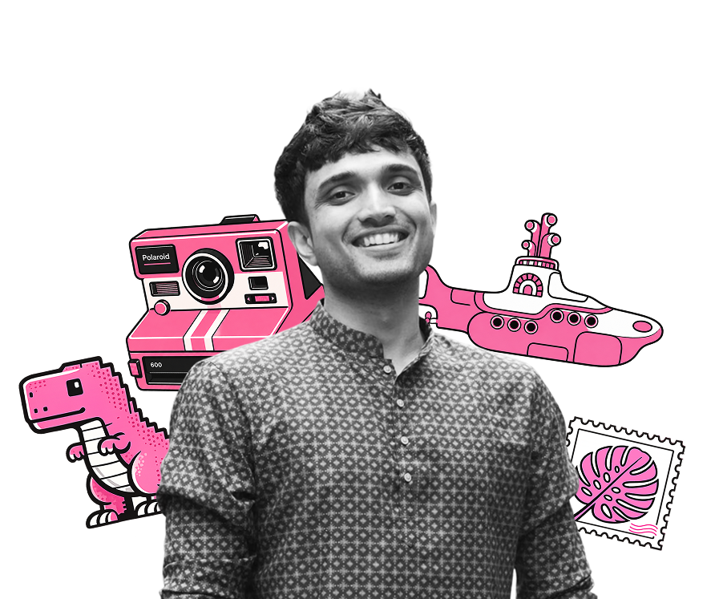
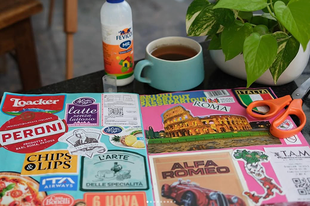
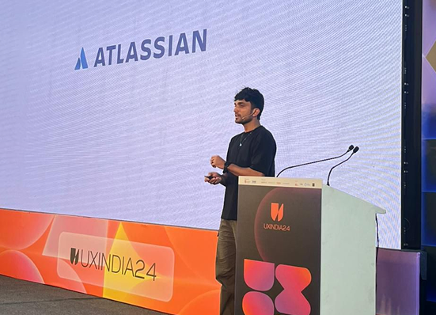
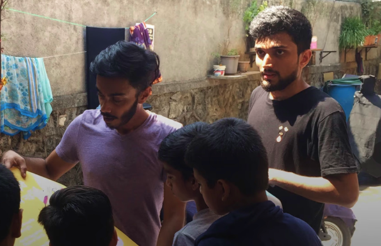
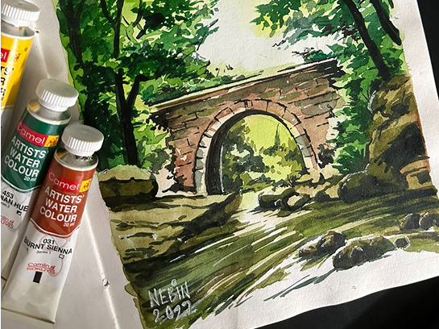
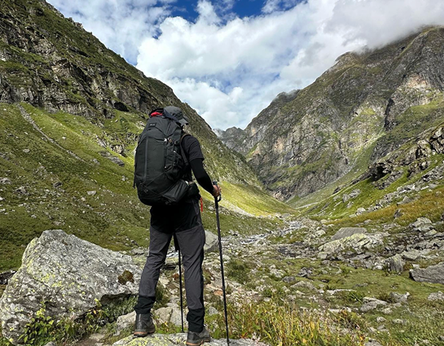
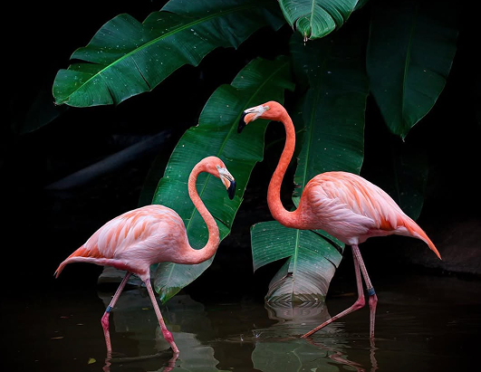
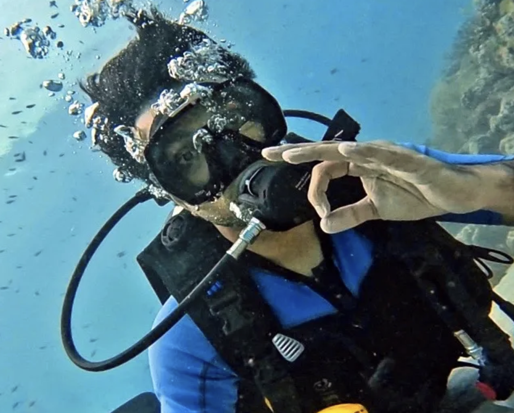

I am Nebin Biju. Currently, I'm a Product Designer at Microsoft designing AI experiences for the Copilot App. Previously, I worked with Atlassian helping enterprise users migrate data.
I am an IIT Bombay alumnus, having graduated with the Institute Silver Medal. I also completed a semester at NTU Singapore, majoring in Interactive Media.
I believe good design is invisible. To me, interfaces are intelligent systems, workflows are conversations and products are living, learning collaborators. I'm particularly drawn to AI, systems thinking, and biomimicry.
Outside of work, I'm endlessly curious. I love exploring new things and collecting experiences through the many hats I wear. I speak, volunteer, trek, play, write, draw, journal, and dream.



My scrapbook is a living archive of the places and moments I have collected along the way. My “physical Instagram.”

What started as a personal challenge has quietly become a craft I genuinely look forward to.

Giving back through design and community work keeps me socially aware, empathetic, and grounded.

Brushstrokes and pencil lines are how I stay present, patient, and fully absorbed in a single moment.

An annual escape into the mountains to disconnect, reset, and return with a renewed sense of perspective.

Photography, for me, is about preserving the fleeting details and everyday scenes that might otherwise be forgotten.

From football to scuba dives, sport and adventure keep me present, curious, and fully alive.
Drop by at nebinbiju@gmail.com